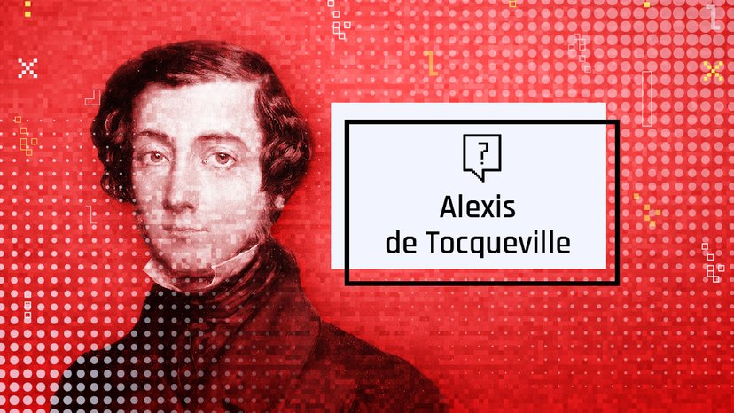

Tocqueville : un des pères du libéralisme


Tocqueville craint les façons désordonnées de s'exprimer et n'approuve pas l'individualisme. Mais il préconise des institutions préservant l'équilibre entre égalité et liberté : séparation des pouvoirs, juges indépendants, associations.